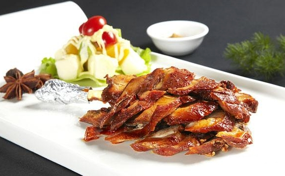

羊腿是烧烤的佳选。烤羊腿是从烤全羊演变而来，此菜以羊腿为主料，经腌制再加调料烘烤而成。成菜羊腿形整，颜色红润，酥烂醇香，滋味鲜美，回味悠长。据传，烤羊腿曾是成吉思汗喜食的一道名菜，因其肉质酥香、焦脆、不膻不腻，他非常喜爱，每天必食。
Step1：羊腿洗净，擦干表面水分。用锋利的小刀在羊腿的表面顺着肉纹戳10个深洞（要使每个洞能伸入食指的大小，洞之间的间距要均匀）；
Step2：鲜香菜洗净沥干水分，切细碎，放在碗中加1/2汤匙盐、黑胡椒、孜然粉和辣椒粉，调入油拌匀成调料汁；
Step3：将羊腿放入烤盘，丁香镶入肉孔内，再放入花生油和清水共250克，置烤盘于烤箱内，用温水烤至汤干，肉熟呈金黄色，取出刷上芝麻油，全腿上桌。亮相之后，切片装盘，在盘两端用黄瓜片点缀，跟烧饵、面酱碟、葱白段碟上桌。